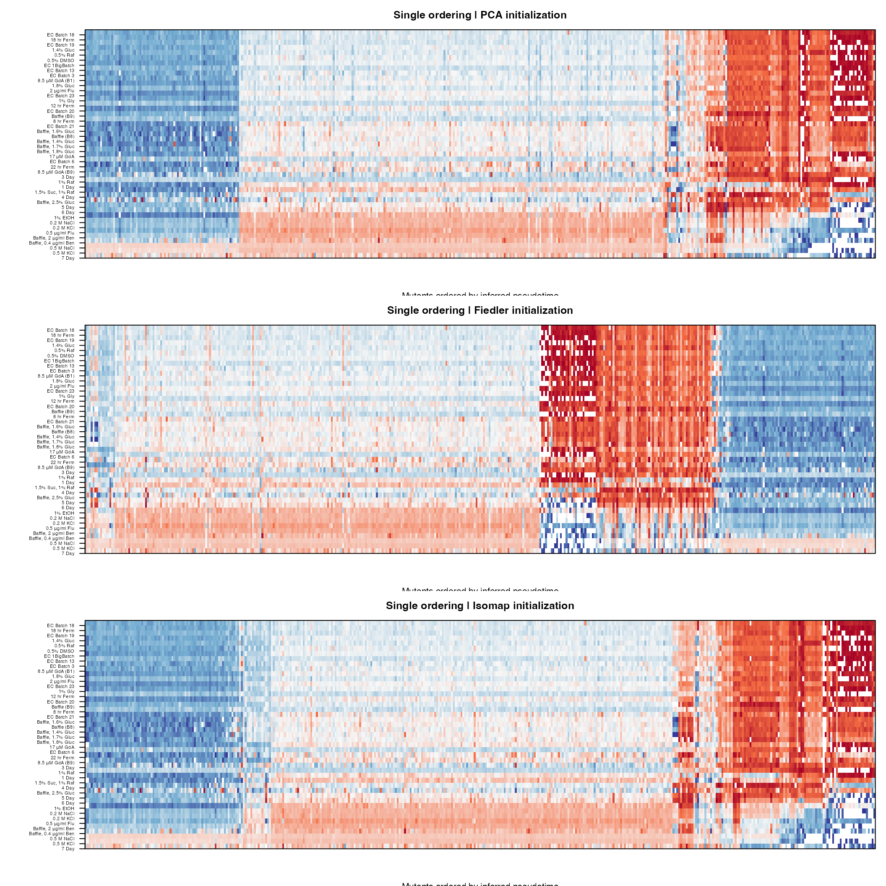
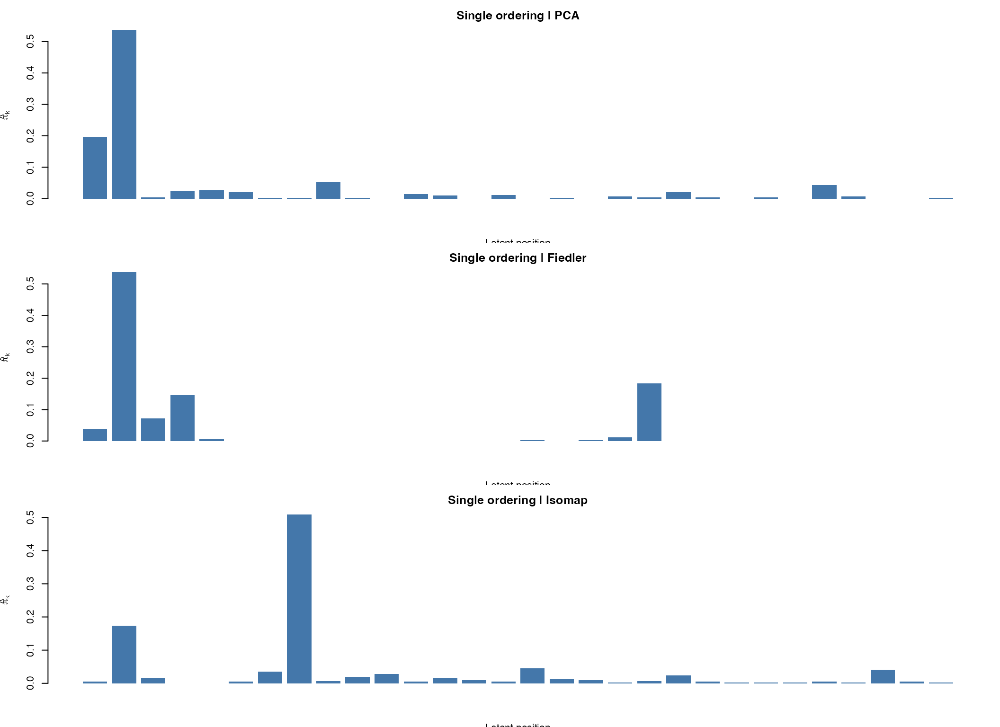
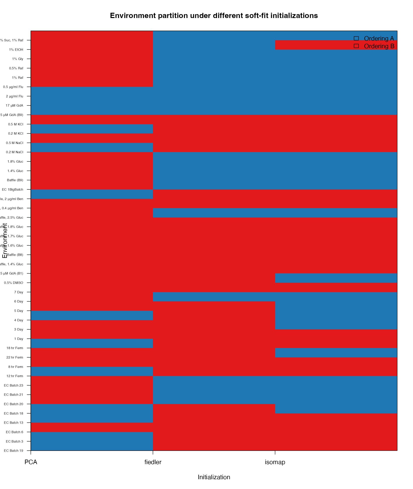
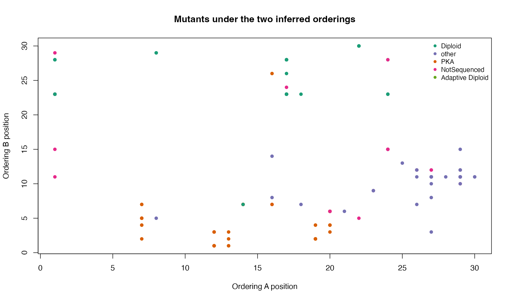
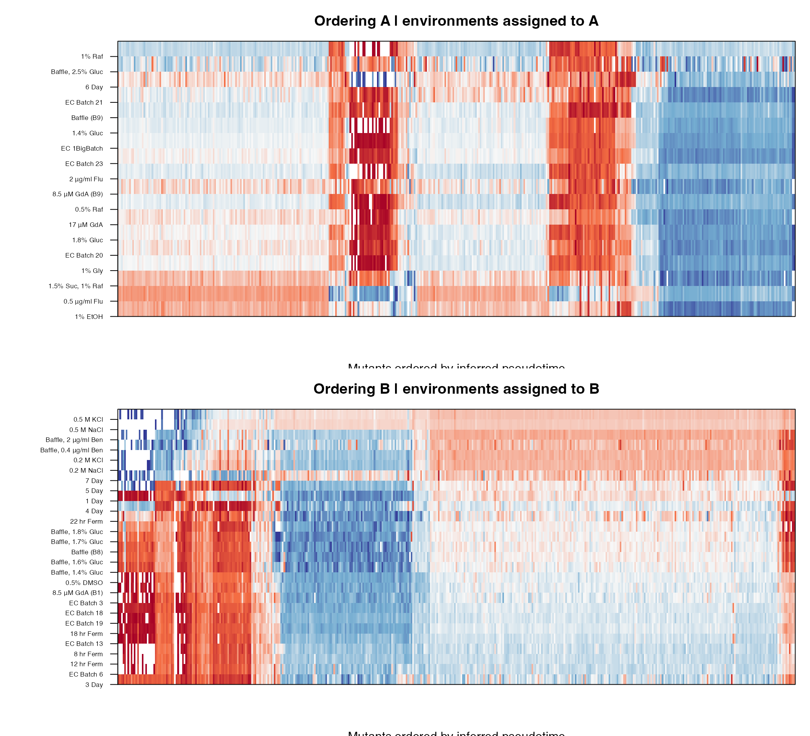
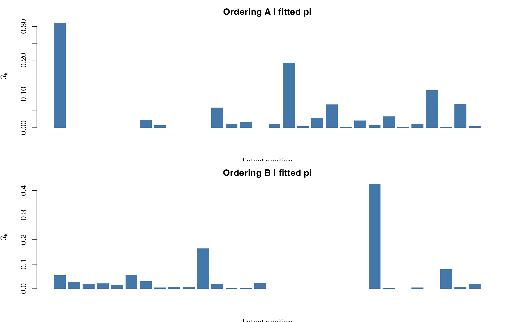
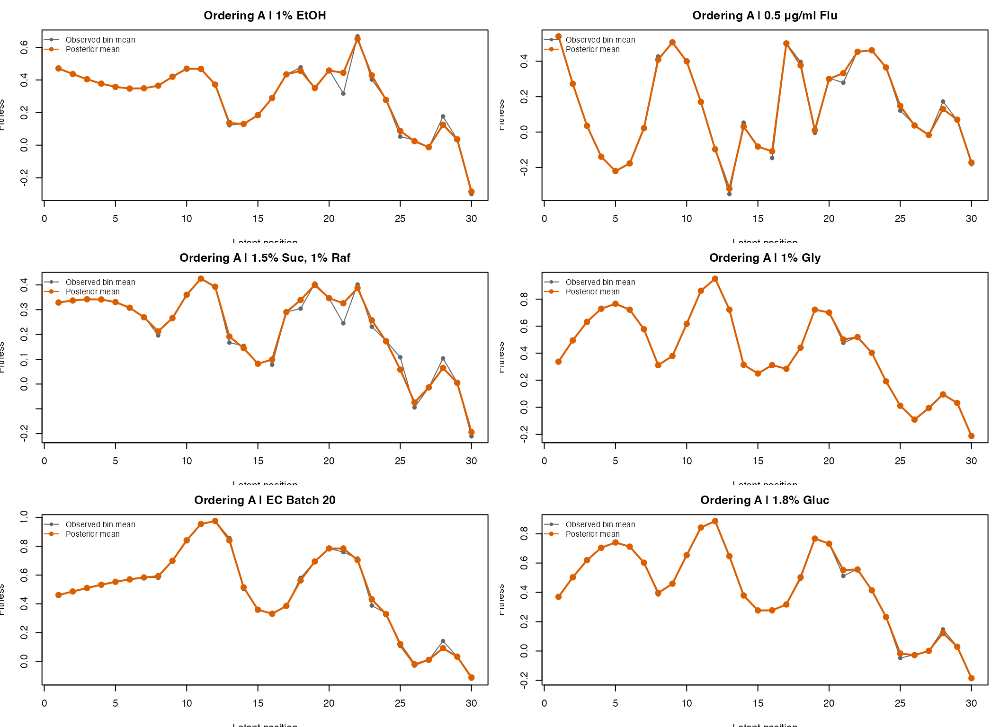
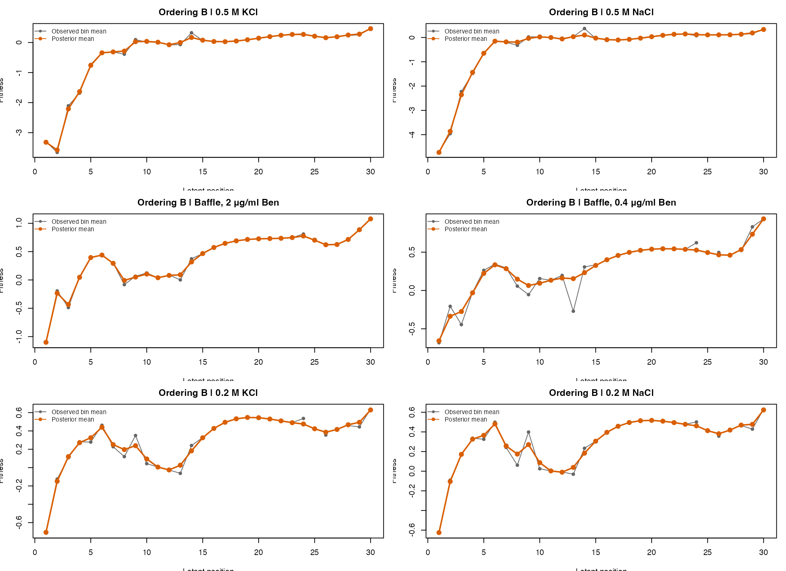

eLife Fitness Landscape Analysis with MPCurver
elife_fitness_analysis.RmdOverview
This vignette illustrates a more paper-style analysis on the eLife
fitness dataset elife-61271-fig2-data1-v2.csv.
In this matrix:
- each row is a mutant;
- each column is an environment;
- each entry is a fitness score.
We use MPCurver in two stages:
- fit a single-ordering model to ask whether the mutants admit one dominant latent ordering across environments;
- fit a two-ordering model to ask whether different environments prefer different latent mutant orderings.
The main questions are:
- do different initialization methods lead to different answers?
- which initialization gives the strongest final objective?
- are the inferred mixture weights
pispread across many latent positions, or concentrated on a few? - which environments appear to follow the same ordering system?
- what do the inferred trajectories look like under each ordering?
Load package and data
if (requireNamespace("MPCurver", quietly = TRUE)) {
library(MPCurver)
} else if (requireNamespace("devtools", quietly = TRUE)) {
devtools::load_all("..", quiet = TRUE)
} else {
stop("Need either an installed MPCurver package or devtools::load_all().")
}
locate_elife_csv <- function() {
pkg_path <- system.file("extdata", "elife-61271-fig2-data1-v2.csv", package = "MPCurver")
if (nzchar(pkg_path) && file.exists(pkg_path)) return(pkg_path)
src_path <- file.path("..", "inst", "extdata", "elife-61271-fig2-data1-v2.csv")
if (file.exists(src_path)) return(src_path)
root_path <- file.path("..", "elife-61271-fig2-data1-v2.csv")
if (file.exists(root_path)) return(root_path)
stop("Could not locate elife-61271-fig2-data1-v2.csv.")
}
csv_path <- locate_elife_csv()
dat <- read.csv(csv_path, check.names = FALSE)
fitness_cols <- grep("_fitness$", names(dat), value = TRUE)
error_cols <- grep("_error$", names(dat), value = TRUE)
X <- as.matrix(dat[, fitness_cols, drop = FALSE])
mode(X) <- "numeric"
colnames(X) <- sub("_fitness$", "", fitness_cols)
meta <- dat[, c("barcode", "gene", "type", "ploidy", "class", "mutation_type"), drop = FALSE]
dim(X)
#> [1] 421 45We have 421 mutants and 45 environments, with no missing fitness
values. The paired *_error columns are kept in the raw
file, but the MPCurver fits below use the fitness matrix itself.
Data overview
environment_category <- function(env) {
if (grepl("Ferm|Day", env)) return("time course")
if (grepl("NaCl|KCl", env)) return("salt stress")
if (grepl("Ben|Flu|GdA|DMSO", env)) return("drug / chemical")
if (grepl("Gluc|Baffle", env)) return("glucose / batch")
if (grepl("Raf|Gly|EtOH|Suc", env)) return("carbon source")
"other"
}
env_category <- vapply(colnames(X), environment_category, character(1))
active_pi_stats <- function(pi_vec, thr = c(0.01, 0.02)) {
out <- setNames(as.list(integer(length(thr))), paste0("pi_gt_", thr))
for (i in seq_along(thr)) out[[i]] <- sum(pi_vec > thr[i])
out$pi_entropy <- -sum(pi_vec * log(pmax(pi_vec, 1e-12)))
out$pi_max <- max(pi_vec)
out
}
ordering_agreement <- function(pt_a, pt_b) {
suppressWarnings(cor(pt_a, pt_b, method = "spearman"))
}
align_assignment <- function(assign_ref, assign_alt) {
agree_same <- mean(assign_ref == assign_alt)
flipped <- ifelse(assign_alt == "A", "B", "A")
agree_flip <- mean(assign_ref == flipped)
if (agree_flip > agree_same) {
list(assign = flipped, agreement = agree_flip, flipped = TRUE)
} else {
list(assign = assign_alt, agreement = agree_same, flipped = FALSE)
}
}
plot_ordered_heatmap <- function(X, order_idx, env_idx = seq_len(ncol(X)),
main = "", zlim = c(-2.5, 2.5)) {
Xsub <- X[order_idx, env_idx, drop = FALSE]
Xsub <- scale(Xsub)
Xsub[!is.finite(Xsub)] <- 0
pal <- colorRampPalette(c("#313695", "#74add1", "#f7f7f7", "#f46d43", "#a50026"))(101)
image(
x = seq_len(nrow(Xsub) + 1L),
y = seq_len(ncol(Xsub) + 1L),
z = Xsub,
col = pal,
axes = FALSE,
xlab = "Mutants ordered by inferred pseudotime",
ylab = "",
zlim = zlim,
main = main
)
axis(2, at = seq_len(ncol(Xsub)), labels = colnames(Xsub), las = 2, cex.axis = 0.55)
box()
}
plot_pi_profile <- function(pi_vec, main) {
barplot(
pi_vec,
border = NA,
col = "#4477AA",
main = main,
xlab = "Latent position",
ylab = expression(hat(pi)[k])
)
}
plot_assignment_matrix <- function(assign_mat, main = "") {
z <- ifelse(assign_mat == "A", 1, 2)
image(
x = seq_len(ncol(z) + 1L),
y = seq_len(nrow(z) + 1L),
z = t(z),
col = c("#1F78B4", "#E31A1C"),
axes = FALSE,
xlab = "Initialization",
ylab = "Environment",
main = main
)
axis(1, at = seq_len(ncol(z)), labels = colnames(assign_mat))
axis(2, at = seq_len(nrow(z)), labels = rownames(assign_mat), las = 2, cex.axis = 0.55)
box()
legend("topright", fill = c("#1F78B4", "#E31A1C"), legend = c("Ordering A", "Ordering B"), bty = "n")
}
plot_representative_trajectories <- function(X, fit, assign_vec, which_assign = "A",
n_show = 6L, main_prefix = "") {
pt <- max.col(fit$gamma, ties.method = "first")
env_idx <- which(assign_vec == which_assign)
if (!length(env_idx)) return(invisible(NULL))
cor_vec <- vapply(env_idx, function(j) {
suppressWarnings(cor(X[, j], pt, method = "spearman"))
}, numeric(1))
env_idx <- env_idx[order(abs(cor_vec), decreasing = TRUE)]
env_idx <- env_idx[seq_len(min(n_show, length(env_idx)))]
mu <- fit$posterior$mean[env_idx, , drop = FALSE]
K <- ncol(mu)
obs_mean <- t(vapply(env_idx, function(j) {
out <- numeric(K)
for (k in seq_len(K)) {
out[k] <- mean(X[pt == k, j])
}
out
}, numeric(K)))
nr <- ceiling(length(env_idx) / 2)
op <- par(mfrow = c(nr, 2), mar = c(3.5, 3.5, 2.5, 1))
on.exit(par(op), add = TRUE)
for (ii in seq_along(env_idx)) {
jj <- env_idx[ii]
ylim <- range(c(mu[ii, ], obs_mean[ii, ]), na.rm = TRUE)
plot(
seq_len(K), obs_mean[ii, ],
type = "o",
pch = 16,
col = "#666666",
ylim = ylim,
xlab = "Latent position",
ylab = "Fitness",
main = paste0(main_prefix, colnames(X)[jj])
)
lines(seq_len(K), mu[ii, ], type = "o", pch = 19, col = "#D95F02", lwd = 2)
legend("topleft", legend = c("Observed bin mean", "Posterior mean"), col = c("#666666", "#D95F02"),
lty = 1, pch = c(16, 19), bty = "n", cex = 0.8)
}
}
data.frame(
quantity = c("mutants", "environments", "fitness columns", "error columns"),
value = c(nrow(X), ncol(X), length(fitness_cols), length(error_cols))
) |>
knitr::kable()| quantity | value |
|---|---|
| mutants | 421 |
| environments | 45 |
| fitness columns | 45 |
| error columns | 45 |
sort(table(env_category), decreasing = TRUE) |>
as.data.frame() |>
stats::setNames(c("category", "n_environments")) |>
knitr::kable()| category | n_environments |
|---|---|
| time course | 10 |
| glucose / batch | 9 |
| other | 9 |
| drug / chemical | 8 |
| carbon source | 5 |
| salt stress | 4 |
Environment labels naturally fall into several coarse groups: time-course measurements, salt stress, drug or chemical perturbations, glucose or batch conditions, and alternative carbon sources.
Single-ordering fit
We first ask whether one dominant latent ordering already explains
the data reasonably well. We compare three initializations under the
same cavi configuration.
single_methods <- c("PCA", "fiedler", "isomap")
single_fits <- lapply(single_methods, function(method_i) {
fit_mpcurve(
X,
algorithm = "cavi",
method = method_i,
K = 30,
rw_q = 2,
iter = 150,
tol = 1e-8,
discretization = "equal",
verbose = FALSE
)
})
names(single_fits) <- single_methods
single_tbl <- do.call(rbind, lapply(names(single_fits), function(m) {
fit <- single_fits[[m]]
pi_stats <- active_pi_stats(fit$params$pi)
data.frame(
method = m,
elbo_last = tail(fit$elbo_trace, 1),
loglik_last = tail(fit$loglik_trace, 1),
iter = fit$iter,
pi_gt_0.01 = pi_stats$pi_gt_0.01,
pi_gt_0.02 = pi_stats$pi_gt_0.02,
pi_max = pi_stats$pi_max,
pi_entropy = pi_stats$pi_entropy,
stringsAsFactors = FALSE
)
}))
knitr::kable(single_tbl, digits = 3)| method | elbo_last | loglik_last | iter | pi_gt_0.01 | pi_gt_0.02 | pi_max | pi_entropy |
|---|---|---|---|---|---|---|---|
| PCA | 15768.86 | 18290.15 | 139 | 10 | 8 | 0.537 | 1.691 |
| fiedler | 12305.52 | 13493.20 | 68 | 6 | 5 | 0.537 | 1.356 |
| isomap | 16667.66 | 19961.42 | 26 | 11 | 7 | 0.508 | 1.913 |
The single-ordering results are quite sensitive to initialization:
-
isomapgives the strongest final ELBO and log-likelihood; -
PCAis weaker but still lands in a similar ordering; -
fiedlerconverges to a substantially worse solution on this dataset.
single_pt <- lapply(single_fits, function(fit) max.col(fit$gamma, ties.method = "first"))
single_agree <- matrix(NA_real_, nrow = length(single_methods), ncol = length(single_methods),
dimnames = list(single_methods, single_methods))
for (i in seq_along(single_methods)) {
for (j in seq_along(single_methods)) {
single_agree[i, j] <- ordering_agreement(single_pt[[i]], single_pt[[j]])
}
}
knitr::kable(round(single_agree, 3))| PCA | fiedler | isomap | |
|---|---|---|---|
| PCA | 1.000 | -0.203 | 0.962 |
| fiedler | -0.203 | 1.000 | -0.185 |
| isomap | 0.962 | -0.185 | 1.000 |
PCA and isomap are very close
(rho ≈ 0.962), while fiedler produces a
different single ordering.
Visualizing the single-ordering fits
env_order_single <- order(apply(X, 2, function(v) suppressWarnings(cor(v, single_pt[["isomap"]], method = "spearman"))))
op <- par(mfrow = c(3, 1), mar = c(3.5, 8, 2.8, 1))
plot_ordered_heatmap(X, order(single_pt[["PCA"]]), env_order_single,
main = "Single ordering | PCA initialization")
plot_ordered_heatmap(X, order(single_pt[["fiedler"]]), env_order_single,
main = "Single ordering | Fiedler initialization")
plot_ordered_heatmap(X, order(single_pt[["isomap"]]), env_order_single,
main = "Single ordering | Isomap initialization")
par(op)
op <- par(mfrow = c(3, 1), mar = c(3.5, 4, 2.5, 1))
plot_pi_profile(single_fits[["PCA"]]$params$pi, "Single ordering | PCA")
plot_pi_profile(single_fits[["fiedler"]]$params$pi, "Single ordering | Fiedler")
plot_pi_profile(single_fits[["isomap"]]$params$pi, "Single ordering | Isomap")
par(op)The fitted pi vectors are clearly not
uniform. Under the best single-ordering fit
(isomap), only 11 of the 30 bins carry more than 1% of the
mass, and only 7 carry more than 2%. This suggests that the mutants
concentrate on a relatively small subset of latent positions rather than
spreading evenly over the full grid.
Two-ordering fit
We next allow the environments to partition into two latent ordering systems. The recommended soft CAVI fit is:
soft_methods <- c("PCA", "fiedler", "isomap")
soft_fits <- lapply(soft_methods, function(method_i) {
soft_two_trajectory_cavi(
X,
init_method = "score",
init_method1 = method_i,
K = 30,
T_start = 5,
T_end = 1,
n_outer = 20,
inner_iter = 1,
max_converge_iter = 60,
tol_outer = 1e-6,
rw_q = 2,
verbose = FALSE
)
})
names(soft_fits) <- soft_methods
soft_tbl <- do.call(rbind, lapply(names(soft_fits), function(m) {
fit <- soft_fits[[m]]
fit1 <- fit$fits[[1]]
fit2 <- fit$fits[[2]]
data.frame(
init_method1 = m,
objective_last = tail(fit$objective_history, 1),
iter = length(fit$objective_history),
monotone = all(diff(fit$objective_history) >= -1e-8),
n_A = sum(fit$assign == "A"),
n_B = sum(fit$assign == "B"),
mean_max_weight = mean(apply(fit$pi_weights, 1, max)),
rho_pt1_pt2 = suppressWarnings(cor(
max.col(fit1$gamma, ties.method = "first"),
max.col(fit2$gamma, ties.method = "first"),
method = "spearman"
)),
stringsAsFactors = FALSE
)
}))
knitr::kable(soft_tbl, digits = 3)| init_method1 | objective_last | iter | monotone | n_A | n_B | mean_max_weight | rho_pt1_pt2 |
|---|---|---|---|---|---|---|---|
| PCA | 15323.63 | 60 | TRUE | 13 | 32 | 0.983 | -0.240 |
| fiedler | 16430.18 | 49 | TRUE | 18 | 27 | 0.992 | -0.395 |
| isomap | 16123.75 | 46 | TRUE | 23 | 22 | 0.987 | -0.259 |
A few things stand out immediately:
- all three soft fits are monotone in the recorded objective;
- by convergence the environment assignments are essentially hard
(
mean_max_weight = 1); -
fiedlergives the highest final soft objective on this dataset; -
isomapis close and will turn out to give a very similar environment partition; -
PCAis the least stable of the three in the two-ordering setting.
soft_agree <- matrix(NA_real_, nrow = length(soft_methods), ncol = length(soft_methods),
dimnames = list(soft_methods, soft_methods))
for (i in seq_along(soft_methods)) {
for (j in seq_along(soft_methods)) {
if (i == j) {
soft_agree[i, j] <- 1
} else {
aa <- align_assignment(soft_fits[[soft_methods[i]]]$assign, soft_fits[[soft_methods[j]]]$assign)
soft_agree[i, j] <- aa$agreement
}
}
}
knitr::kable(round(soft_agree, 3))| PCA | fiedler | isomap | |
|---|---|---|---|
| PCA | 1.000 | 0.556 | 0.578 |
| fiedler | 0.556 | 1.000 | 0.844 |
| isomap | 0.578 | 0.844 | 1.000 |
The fiedler and isomap soft fits are quite
similar (agreement ≈ 0.867 after allowing label switching),
while the PCA-initialized soft fit is much less consistent
with the other two.
Environment partition across initializations
assign_mat <- do.call(cbind, lapply(soft_methods, function(m) soft_fits[[m]]$assign))
colnames(assign_mat) <- soft_methods
rownames(assign_mat) <- colnames(X)
plot_assignment_matrix(assign_mat, main = "Environment partition under different soft-fit initializations")
For the remainder of the analysis, we focus on the
fiedler-initialized soft fit, because it
achieved the strongest final objective while remaining very close to the
isomap answer.
soft_primary <- soft_fits[["fiedler"]]
fit1_primary <- soft_primary$fits[[1]]
fit2_primary <- soft_primary$fits[[2]]
pt1 <- max.col(fit1_primary$gamma, ties.method = "first")
pt2 <- max.col(fit2_primary$gamma, ties.method = "first")
assign_primary <- soft_primary$assign
env_partition_tbl <- data.frame(
environment = colnames(X),
category = env_category,
ordering = assign_primary,
stringsAsFactors = FALSE
)
knitr::kable(env_partition_tbl, row.names = FALSE)| environment | category | ordering |
|---|---|---|
| EC Batch 19 | other | B |
| EC Batch 3 | other | B |
| EC Batch 6 | other | B |
| EC Batch 13 | other | B |
| EC Batch 18 | other | B |
| EC Batch 20 | other | A |
| EC Batch 21 | other | A |
| EC Batch 23 | other | A |
| 12 hr Ferm | time course | B |
| 8 hr Ferm | time course | B |
| 22 hr Ferm | time course | B |
| 18 hr Ferm | time course | B |
| 1 Day | time course | B |
| 3 Day | time course | B |
| 4 Day | time course | B |
| 5 Day | time course | B |
| 6 Day | time course | A |
| 7 Day | time course | B |
| 0.5% DMSO | drug / chemical | B |
| 8.5 μM GdA (B1) | drug / chemical | B |
| Baffle, 1.4% Gluc | glucose / batch | B |
| Baffle (B8) | glucose / batch | B |
| Baffle, 1.6% Gluc | glucose / batch | B |
| Baffle, 1.7% Gluc | glucose / batch | B |
| Baffle, 1.8% Gluc | glucose / batch | B |
| Baffle, 2.5% Gluc | glucose / batch | A |
| Baffle, 0.4 μg/ml Ben | drug / chemical | B |
| Baffle, 2 μg/ml Ben | drug / chemical | B |
| EC 1BigBatch | other | A |
| Baffle (B9) | glucose / batch | A |
| 1.4% Gluc | glucose / batch | A |
| 1.8% Gluc | glucose / batch | A |
| 0.2 M NaCl | salt stress | B |
| 0.5 M NaCl | salt stress | B |
| 0.2 M KCl | salt stress | B |
| 0.5 M KCl | salt stress | B |
| 8.5 μM GdA (B9) | drug / chemical | A |
| 17 μM GdA | drug / chemical | A |
| 2 μg/ml Flu | drug / chemical | A |
| 0.5 μg/ml Flu | drug / chemical | A |
| 1% Raf | carbon source | A |
| 0.5% Raf | carbon source | A |
| 1% Gly | carbon source | A |
| 1% EtOH | carbon source | A |
| 1.5% Suc, 1% Raf | carbon source | A |
A coarse summary by environment category is:
cat_tbl <- with(env_partition_tbl, table(category, ordering))
knitr::kable(as.data.frame.matrix(cat_tbl))| A | B | |
|---|---|---|
| carbon source | 5 | 0 |
| drug / chemical | 4 | 4 |
| glucose / batch | 4 | 5 |
| other | 4 | 5 |
| salt stress | 0 | 4 |
| time course | 1 | 9 |
At a high level, the fitted two-ordering split suggests:
- one ordering is enriched for late time-course measurements and several carbon-source / drug conditions;
- the other ordering is enriched for earlier EC / fermentation conditions and strong salt / benomyl environments.
The split is not purely by one regex-defined category, but it is clearly more structured than a random environment partition.
The two mutant orderings themselves
top_classes <- names(sort(table(meta$class), decreasing = TRUE))[1:4]
class_plot <- ifelse(meta$class %in% top_classes, as.character(meta$class), "other")
class_cols <- c(
"Diploid" = "#1b9e77",
"other" = "#7570b3",
"PKA" = "#d95f02",
"NotSequenced" = "#e7298a",
"Adaptive Diploid" = "#66a61e"
)
plot(
pt1, pt2,
pch = 16,
col = class_cols[class_plot],
xlab = "Ordering A position",
ylab = "Ordering B position",
main = "Mutants under the two inferred orderings"
)
legend("topright", legend = names(class_cols), col = class_cols, pch = 16, bty = "n", cex = 0.85)
The two orderings are not the same. Their Spearman correlation is -0.395, so the second ordering is not simply a minor perturbation of the first.
A_idx <- which(assign_primary == "A")
B_idx <- which(assign_primary == "B")
env_order_A <- A_idx[order(vapply(A_idx, function(j) suppressWarnings(cor(X[, j], pt1, method = "spearman")), numeric(1)))]
env_order_B <- B_idx[order(vapply(B_idx, function(j) suppressWarnings(cor(X[, j], pt2, method = "spearman")), numeric(1)))]
op <- par(mfrow = c(2, 1), mar = c(3.5, 8, 2.8, 1))
plot_ordered_heatmap(X, order(pt1), env_order_A, main = "Ordering A | environments assigned to A")
plot_ordered_heatmap(X, order(pt2), env_order_B, main = "Ordering B | environments assigned to B")
par(op)These heatmaps show the actual mutant ordering recovered for each trajectory system, after restricting the columns to the environments that the soft fit assigned to that system.
Mixture weights under the two-ordering fit
op <- par(mfrow = c(2, 1), mar = c(3.5, 4, 2.5, 1))
plot_pi_profile(fit1_primary$params$pi, "Ordering A | fitted pi")
plot_pi_profile(fit2_primary$params$pi, "Ordering B | fitted pi")
par(op)Again the fitted pi vectors are far from uniform. Under
the primary soft fit:
- Ordering A has 14 bins above 1% mass;
- Ordering B has 13 bins above 1% mass.
Ordering B is more concentrated, with a maximum bin mass of about 0.427.
Representative trajectories
To make the latent orderings more concrete, we show representative environments from each system. In each panel:
- the grey line is the observed mean fitness after binning mutants by the inferred ordering;
- the orange line is the fitted posterior mean trajectory.
plot_representative_trajectories(X, fit1_primary, assign_primary, which_assign = "A",
n_show = 6L, main_prefix = "Ordering A | ")
plot_representative_trajectories(X, fit2_primary, assign_primary, which_assign = "B",
n_show = 6L, main_prefix = "Ordering B | ")
For this primary soft fit, the strongest ordering-A environments include alternative carbon or drug conditions such as:
cor1 <- vapply(seq_len(ncol(X)), function(j) suppressWarnings(cor(X[, j], pt1, method = "spearman")), numeric(1))
a_idx <- which(assign_primary == "A")
ordA <- a_idx[order(abs(cor1[a_idx]), decreasing = TRUE)][1:6]
knitr::kable(data.frame(environment = colnames(X)[ordA], spearman_with_pt1 = round(cor1[ordA], 3)))| environment | spearman_with_pt1 |
|---|---|
| 1% EtOH | -0.669 |
| 0.5 μg/ml Flu | -0.638 |
| 1.5% Suc, 1% Raf | -0.581 |
| 1% Gly | -0.505 |
| EC Batch 20 | -0.491 |
| 1.8% Gluc | -0.490 |
The strongest ordering-B environments are dominated by salt and benomyl:
cor2 <- vapply(seq_len(ncol(X)), function(j) suppressWarnings(cor(X[, j], pt2, method = "spearman")), numeric(1))
b_idx <- which(assign_primary == "B")
ordB <- b_idx[order(abs(cor2[b_idx]), decreasing = TRUE)][1:6]
knitr::kable(data.frame(environment = colnames(X)[ordB], spearman_with_pt2 = round(cor2[ordB], 3)))| environment | spearman_with_pt2 |
|---|---|
| 0.5 M KCl | 0.842 |
| 0.5 M NaCl | 0.806 |
| Baffle, 2 μg/ml Ben | 0.772 |
| Baffle, 0.4 μg/ml Ben | 0.744 |
| 0.2 M KCl | 0.729 |
| 0.2 M NaCl | 0.683 |
Takeaways
This dataset makes a good real-data illustration for MPCurver because it shows both strengths and sensitivities of the model.
Single-ordering MPCurver already captures strong structure. The environment correlation spectrum is steep, and
isomapgives a clearly stronger single-ordering fit thanfiedler.The fitted latent occupancy is highly non-uniform. In both the single-ordering and two-ordering fits, only a minority of the 30 latent bins carry substantial mass.
A two-ordering model is plausible and interpretable. The soft CAVI fit consistently separates environments into two broad systems: one enriched for later time-course / carbon-source / some drug conditions, and one enriched for early EC / fermentation / salt / benomyl conditions.
Initialization still matters, but less so for the partition than for the raw single ordering. In the two-ordering fit,
fiedlerandisomapproduce similar partitions, whilePCAis the outlier. In the single-ordering fit,fiedleris much less competitive thanisomap.The soft partition objective behaved cleanly here. All three soft fits were monotone in the tracked objective history, so this example does not show the old non-monotone pathology we saw on legacy
csmooth_emsoft-partition experiments.